TensorProductGrid¶
About the TensorProductGrid class¶
The WaveBlocks Project
@author: R. Bourquin @copyright: Copyright (C) 2010, 2011, 2012, 2013, 2014 R. Bourquin @license: Modified BSD License
Inheritance diagram¶
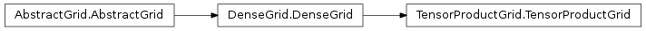
Class documentation¶
- class WaveBlocksND.TensorProductGrid(limits, number_nodes)¶
This class represents a dense tensor product grid. It can have an arbitrary dimension
 . The grid nodes are
enclosed in a hypercubic bounding box. This box can have
different limits 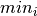, 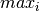 along each
axis
. The grid nodes are
enclosed in a hypercubic bounding box. This box can have
different limits 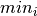, 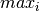 along each
axis  . In each of these intervals we place
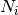 grid nodes. Note that the point
is not part of the grid. The grid interior is build as the
tensor product of all the grid nodes along all the axes.
. In each of these intervals we place
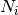 grid nodes. Note that the point
is not part of the grid. The grid interior is build as the
tensor product of all the grid nodes along all the axes.- get_axes(axes=None)¶
Returns the one-dimensional grids along the axes.
Parameters: axes (A single integer or a list of integers. If set to None (default) we return the data for all axes.) – The axes for which we want to get the grid. Returns: A list of ndarrays, each having a shape of 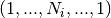. We return a list even if it contains just a single element.
- get_dimension()¶
Return the dimension
of the grid.
- get_extensions(axes=None)¶
Returns the extensions (length of the edges) of the bounding box.
Parameters: axes (A single integer or a list of integers. If set to None (default) we return the extensions for all axes.) – The axes for which we want to get the extensions. Returns: A list of 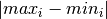 values.
- get_limits(axes=None)¶
Returns the limits of the bounding box.
Parameters: axes (A single integer or a list of integers. If set to None (default) we return the limits for all axes.) – The axes for which we want to get the limits. Returns: A list of 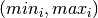 ndarrays.
- get_meshwidths(axes=None)¶
Returns the meshwidths of the grid.
Parameters: axes (A single integer or a list of integers. If set to None (default) we return the data for all axes.) – The axes for which we want to get the meshwidths. Returns: A list of 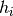 values or a single value.
- get_nodes(flat=True, split=False)¶
Returns all grid nodes of the full tensor product grid.
Parameters: - flat (Boolean, default is True.) – Whether to return the grid with a hypercubic 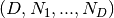 shape or a flat 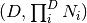 shape.
- split (Boolean, default is False.) – Whether to return the different components, one for each dimension inside a single ndarray or a list with ndarrays, with one item per dimension.
Returns: Depends of the optional arguments.
- get_number_nodes(axes=None, overall=False)¶
Returns the number of grid nodes along a set of axes.
Parameters: - axes (A single integer or a list of integers. If set to None (default) we return the data for all axes.) – The axes for which we want to get the number of nodes.
- overall (Boolean, default is False) – Compute the product 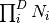 of the
number of grid nodes along each axis
 specified.
specified.
Returns: A list of values or a single value
 .
.
- is_regular()¶
Answers the question if the grid spacing is regular. (It can still be different along each axis!)